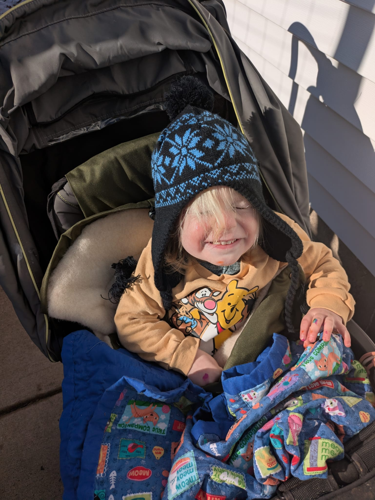
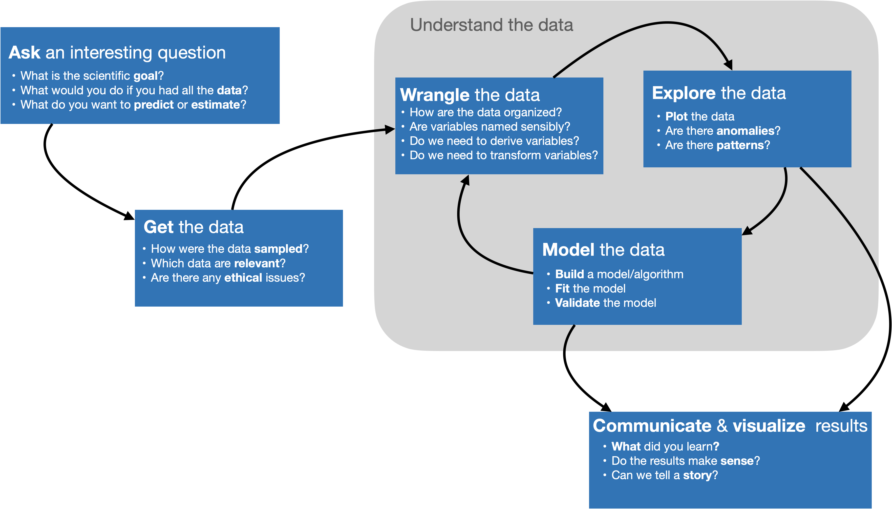
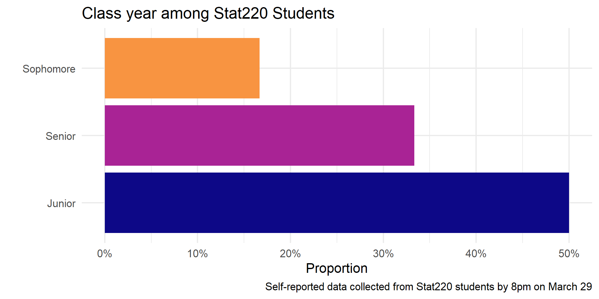
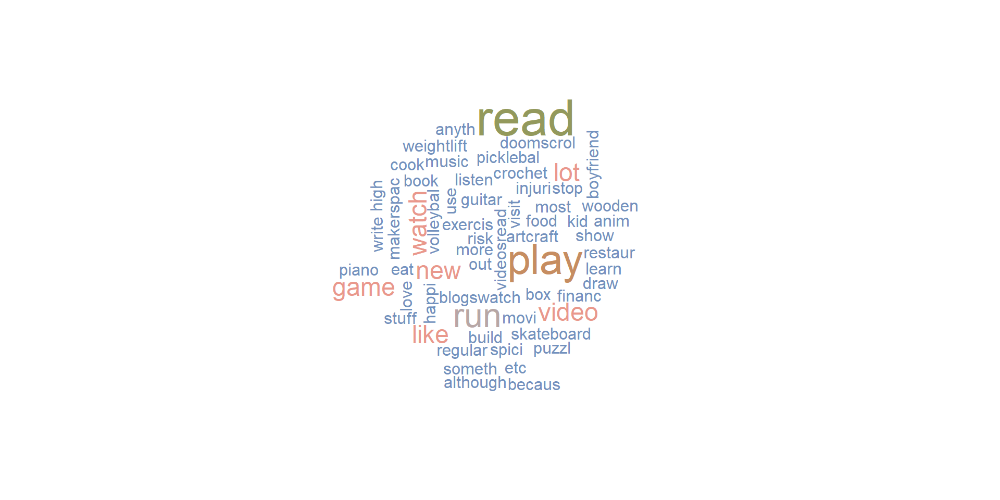
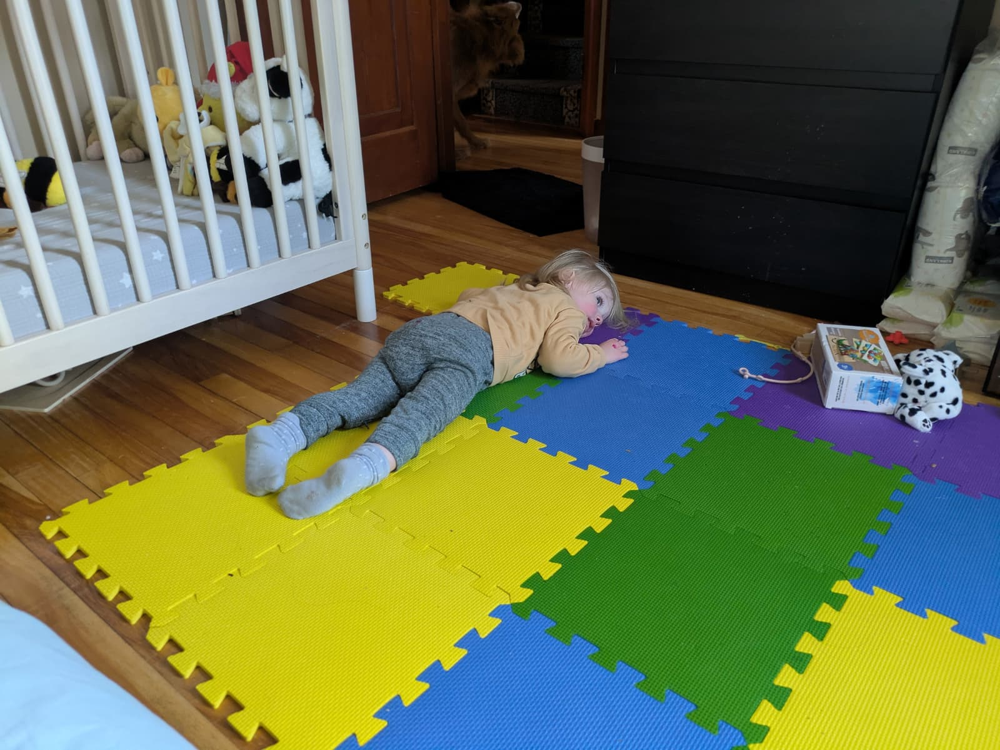

Day 01
Carleton College
Stat 220 - Spring 2026

To get to know you all better, you will make a dataset about yourselves to share with the class. You have 30 minutes to do so. You should hit on the following buckets:

# A tibble: 10 × 3
class_year sleep northfield_food
<chr> <dbl> <chr>
1 Junior 7 Driving by car.
2 Senior 6 <NA>
3 Sophomore 7 Desi Diner
4 Junior 8 Desi Diner
5 Senior 6 El tri
6 Sophomore 9 DoorDash
7 Junior 7 Desi diner
8 First year 8 culvers
9 Senior 7 Desi Diner
10 Sophomore 6 Desi Diner You took a survey
Google saved your responses in a sheet
I read your data into R, cleaned it, and saved it as a CSV
What class year are you?
survey |>
count(class_year) |>
mutate(prop = n/sum(n)) |>
ggplot(aes(y = class_year, x = prop, fill = class_year)) +
geom_col(show.legend = FALSE) +
scale_x_continuous(labels = percent_format(accuracy = 1), breaks = c(0, .1, .2, .3, .4, .5)) +
labs(
title = "Class year among Stat220 Students",
y = "",
x = "Proportion",
caption = "Self-reported data collected from Stat220 students by 10am on Jan 5"
) +
scale_fill_viridis_d(end = .75, option = "plasma")
How many hours of sleep per night do you typically get during the term?
Where can you find the best food in Northfield?
survey |>
count(northfield_food) |>
mutate(prop = n/sum(n)) |>
ggplot(aes(y = northfield_food, x = prop, fill = northfield_food)) +
geom_col(show.legend = FALSE) +
scale_x_continuous(labels = percent_format(accuracy = 1), breaks = c(0, .1, .2, .3, .4, .5)) +
labs(
title = "Where can you find the best food in Northfield?",
y = "",
x = "Proportion",
caption = "Self-reported data collected from Stat220 students by 10am on Jan 5"
) +
scale_fill_viridis_d(end = .75, option = "plasma")
And the second reason, which is both a huge strength of R and a bit of a weakness, is that R is not just a programming language. It was designed from day 1 to be an environment that can do data analysis. So, compared to the other options like Python, you can get up and running in R doing data science, learning much, much less about programming to get started. And that generally makes it like easier to get up and running if you don’t have formal training in computer science or software engineering.
-Hadley Wickham, Advice to Young (and Old) Programmers: A Conversation with Hadley Wickham

It’s easy when you start out programming to get really frustrated and think, “Oh it’s me, I’m really stupid,” or, “I’m not made out to program.” But, that is absolutely not the case. Everyone gets frustrated. I still get frustrated occasionally when writing R code. It’s just a natural part of programming. So, it happens to everyone and gets less and less over time. Don’t blame yourself. Just take a break, do something fun, and then come back and try again later.
Heavily encouraging you to have your own local R and RStudio
You may have to install packages as we go - use install.packages function
You may be used to Maize
Okay to use that for now, but work on downloading R and RStudio
Not strictly mandatory but highly encouraged - come to me with any issues
01-example-unvotes from https://stat220-w26.github.io, and follow the directions to open the file in RstudioWith your neighbor(s):
Choose two countries to compare to the U.S. voting record in the U.N. over the years.
What did you learn?
Read the full syllabus by next class - on course website
| Day | Time | Type | Location |
|---|---|---|---|
| Monday | 2-3 | Drop-in | CMC 225 |
| Tuesday | 10:30-11:30 | Appt | CMC 225 |
| Wednesday | 11:30-12:30 | Drop-in | CMC 225 |
| Friday | 12-1 | Drop-in | CMC 225 |
Homework and will be graded as successful, half credit, or not successful. Projects will be graded as excellent, successful, or not successful.
To earn a course grade, you must meet all of the requirements in a given row:
| Homework Problems | Portfolio Projects (4 total) | Final Project | |
|---|---|---|---|
| A | 90% | 2 Excellent + 2 Successful | Excellent |
| B | 80% | 4 Successful | Successful |
| C | 70% | 3 Successful | Successful |
| D | 50% | 2 Successful | Successful |
“+” and “-” grades are determined by partially meeting the requirements in a given row.
Note: I expect daily attendance and participation. Missing >5 class meetings or consistent issues with being on-task will result in a 1/3 grade deduction.
You get 3 tokens. You can use a token to:
https://github.com/stat220kurtz
GitHub organization for the course
All of your work and your membership (enrollment) in the organization is private
Each assignment is a private repo on GitHub, I distribute the assignments on GitHub.
You will work on your assignment, then “render ➡️ commit ✅ push ⤴️”
You’ll then be able to submit your PDF via gradescope
Fill out the Welcome Survey for collection of your account names, later this week you will be invited to the course organization.
Create a GitHub account if you don’t have one
Complete the welcome survey if you haven’t already
Read the syllabus
Download or update your local R/RStudio versions
Complete the readings for next class